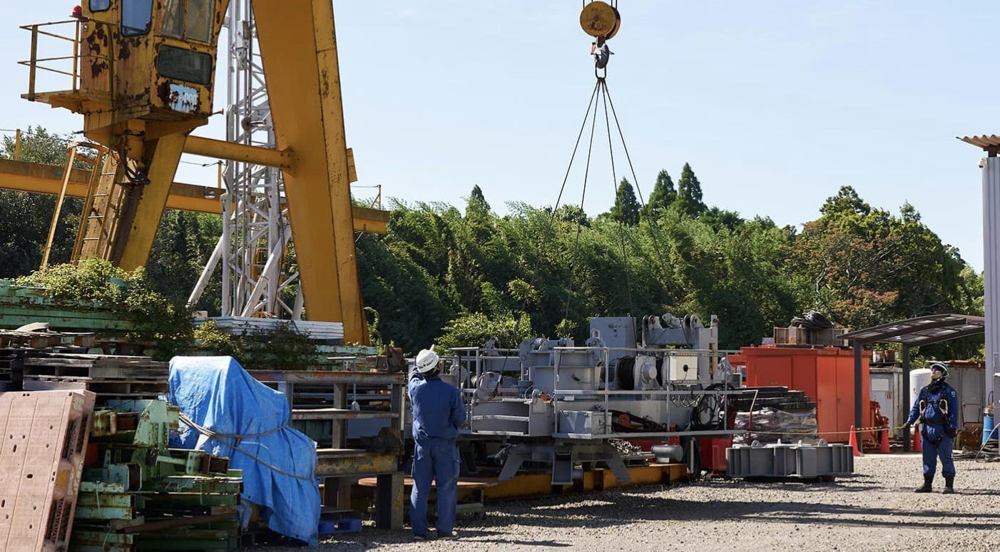
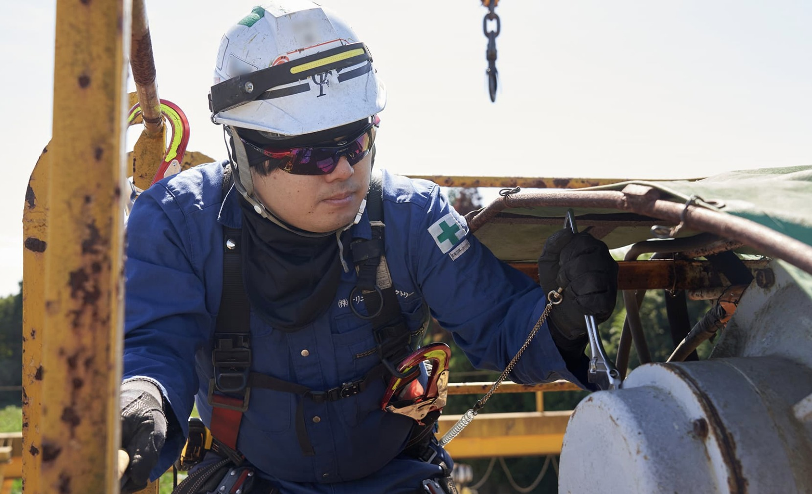
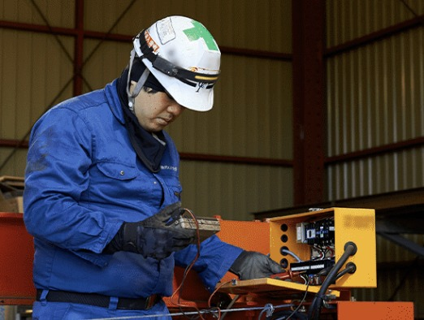
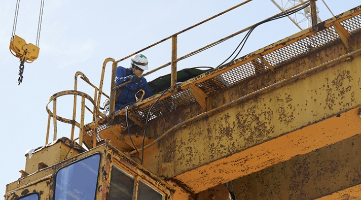

建設機械の工場作業スタッフ｜正社員募集
未経験から、
未経験から、
タワークレーンの
プロへ。
街をつくる機械を、裏側から支える仕事。専門資格も経験も、入社時点では必要ありません。
未経験歓迎賞与年2回残業ほぼなし借上社宅あり
エントリーする

街をつくる機械を、裏側から支える仕事。専門資格も経験も、入社時点では必要ありません。
現場で事故が起こらないこと。
それが、私たちの毎日の成果です。
安心・安全な工事のために、自社工場で日々メンテナンスと修理を行う。けっして目立つ役割ではありません。それでも「見えないところで貢献できている」と感じるたびに、この仕事のやりがいは大きくなっていきます。
当社に営業職はいません。お客様一人ひとりに真摯に向き合い、求められる結果を残し続けてきた実績と信頼が、次の仕事につながっているからです。
必要なのは、この仕事への興味と、前向きに取り組む姿勢だけ。安定した環境で、専門技術を身につけませんか。


建設工事で使う機械の整備・修理を、自社工場内で行います。担当するのは特殊な機械ばかり。専門性が高いぶん、身につくスキルは一生ものです。
▶ 2〜3年かけて、じっくり独り立ちを目指します
※ここはサンプルです。実際には御社スタッフの1日の流れに差し替えます
作業内容と安全確認を全員で共有。
工事用エレベーターの点検・部品交換。先輩とペアで進めます。
午前・午後の小休憩と合わせて、休憩は合計1時間40分。
タワークレーン部品の整備、電気系統のチェックなど。
工具を整理し、翌日の作業を確認。
ほぼ定時で終わるので、予定も立てやすい毎日です。
「ちょっと気になる」段階でも大歓迎です。
エントリーする※ここはサンプルです。実際の社員インタビュー・写真に差し替えます


※ここはサンプルです。実際に働く先輩からのメッセージ・写真に差し替えます
有給が取りやすく、連休も取れます。休みの日はしっかりリフレッシュできています。
資格を取るたびに任される仕事が増え、手当もつく。成長が目に見えるのが嬉しいです。
社宅があったので、引っ越しを伴う転職でも安心でした。家族との時間も増えました。
前職は接客業。まったくの異業種でしたが、質問しやすい雰囲気に助けられています。
若い人が育っていくのを見るのが楽しみ。分からないことは遠慮なく聞いてください。
安全第一。そのうえで、一人ひとりのペースに合わせて技術を伝えていきます。
年間6.5か月分の支給実績あり。昇給も年1回あります。
住まいの面からも生活をサポートします（社内規定あり）。
家族・資格・能力給・役職・外勤・出張など手当が充実。
月平均5〜10時間。定時は17:20です。
5日以上の連続休暇も取得可能。有給もほぼ希望どおりに。
制服貸与、退職金制度（社内規定あり）、社会保険完備。
※ここはサンプルです。実際には御社の「よくある質問」が入ります
※ここはサンプルです。実際の採用担当者の写真・お名前・メッセージに差し替えます
| 募集職種 | 建設機械を取り扱う工場作業スタッフ |
|---|---|
| 雇用形態 | 正社員（試用期間3か月・条件変動なし） |
| 仕事内容 | 工場内での、建設工事用機械（工事用エレベーター、タワークレーン、特殊機械など）の整備・修理 |
| 応募資格 | 普通自動車免許（AT限定可） 学歴不問・経験不問・ブランクOK・U/Iターン歓迎 【歓迎】溶接資格／玉掛け技能者資格／低圧電気取扱の特別教育修了／クレーン運転資格 |
| 給与 | 月給 220,000円〜550,000円（経験・能力により決定） ※みなし残業代（15,700〜39,300円／14時間分）を含む。超過分は別途支給 昇給 年1回／賞与 年2回（年間6.5か月分の支給実績あり） 【モデル給与例】入社2年目 年収480万円／入社10年目 年収600万円／入社15年目 年収750万円 |
| 勤務時間 | 8:30〜17:20（休憩1時間40分）／月単位の変形労働時間制 残業：月平均5〜10時間 |
| 休日・休暇 | 隔週休2日制（隔土曜・日曜）、祝日 GW・夏季・年末年始休暇、有給休暇 |
| 勤務地 | 〒265-0076 千葉県千葉市若葉区下田町1376-4 千葉都市モノレール2号線「千城台駅」より車で約4分 |
| 待遇・福利厚生 | 社会保険完備／交通費全額支給／住宅手当／家族手当／資格手当／能力給手当／役職手当／外勤手当／出張手当／借上寮・社宅あり（社内規定あり）／退職金制度あり（社内規定あり）／車通勤OK／制服貸与 |
| 選考プロセス | エントリー → 書類選考・面接（1回）→ 内定 |